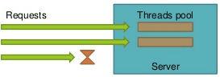
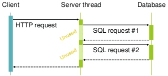
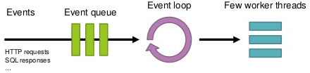
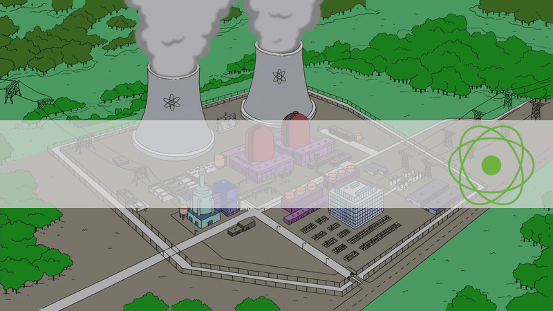
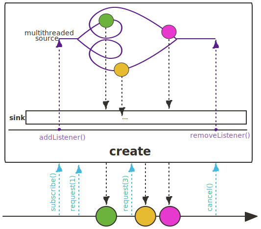
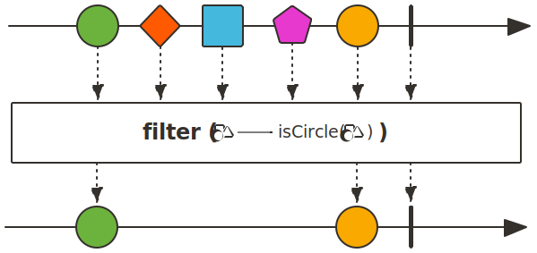
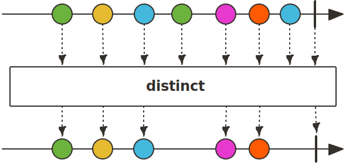

Programmation Impérative
- Un action déclenche une réaction
- Un thread par requête
 - Le thread attend le résultat des appels système (IO, Réseau, ...)
 - Une augmentation du nombre de thread permet d’accepter plus de requêtes.
Programmation Asynchrone
- Un évènement déclenche une action
 - Le thread n’attend pas de réponse
- Demande un profond changement de mode de pensée
Les API Standard Java
public interface Publisher<T> {
public void subscribe(Subscriber<? super T> s);
}
package org.reactivestreams;
public interface Subscriber<T> {
void onSubscribe(Subscription s);
void onNext(T e);
void onError(Throwable t);
void onComplete();
}
Spring Reactor
create

Flux.create(sink -> {
dsl.selectFrom(CMSY_PAGE).fetch().forEach(record -> {
Entity<Page> entity = PAGE_RECORD_MAPPER.from(record);
sink.next(entity);
});
sink.complete();
});
fromArray

Flux.fromArray(new String[]{"un", "deux", "trois"})
.subscribe()
filter

Flux.fromArray(new String[]{"un", "deux", "trois"})
.filter(s -> s.startWith("u"))
.subscribe()
distinct

Flux.fromArray(new String[]{"un", "deux", "un"})
.distinct()
.subscribe()
map

Flux.fromArray(new String[]{"1", "2", "3"})
.map(Integer::valueOf)
.subscribe()
flatMap

Flux.fromArray(new String[]{"1", "2", "3"})
.flatMap(s -> listAllCharacter(s))
.subscribe()
// Pour une entrée, listAllEntity retourne plusieures valeurs
Flux<Character> listAllEntity(String numero) {
return Flux.create(sink -> {
for (char c : numero.toCharArray()) {
sink.next(Character.valueOf(c));
}
sink.complete();
});
}
La Concurrence
Scheduler dbScheduler =
Schedulers.newParallel("db-short-pool", 20);
Mono.fromCallable(() ->
dsl.selectFrom(CMSY_PAGE).where(CMSY_PAGE.CMSY_ID.eq(id))
.fetchOne(PAGE_RECORD_MAPPER))
.subscribeOn(dbScheduler)
.switchIfEmpty(Mono.error(new NoSuchElementException(id)));
Ici, tout ce qui se passe avant le subscribeOn est exécuté sur le pool de threads réservé aux accès BDD courts. Le switchIfEmpty est exécuté sur le thread principal.